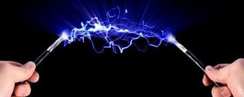
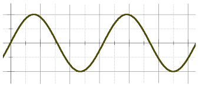
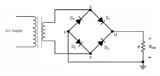
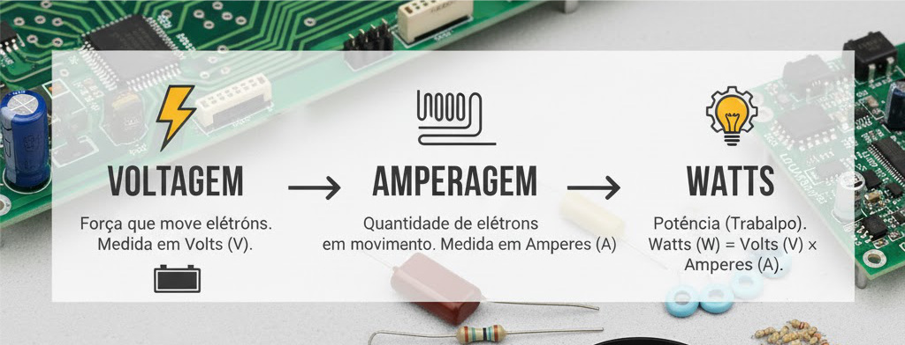
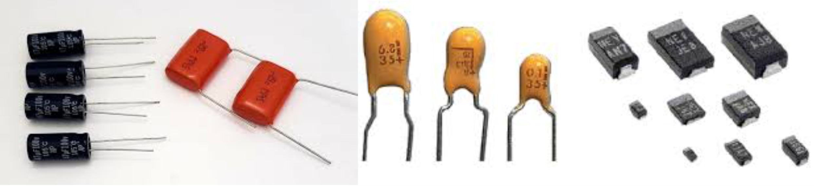
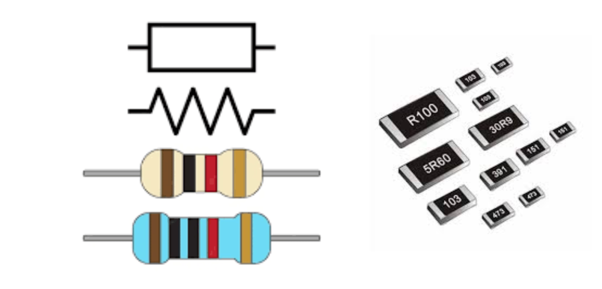
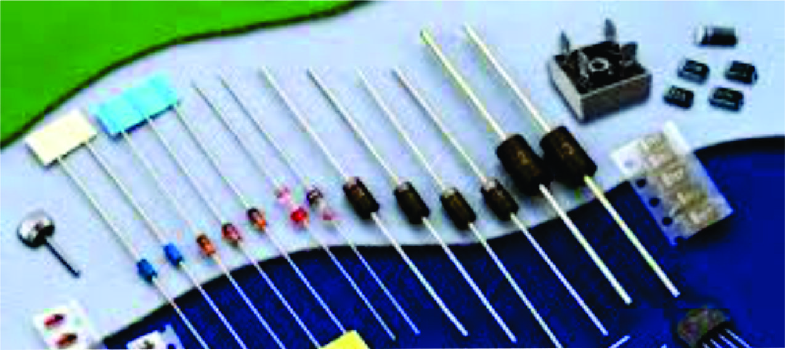
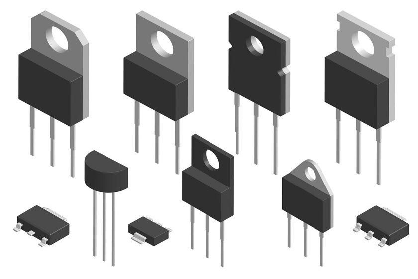
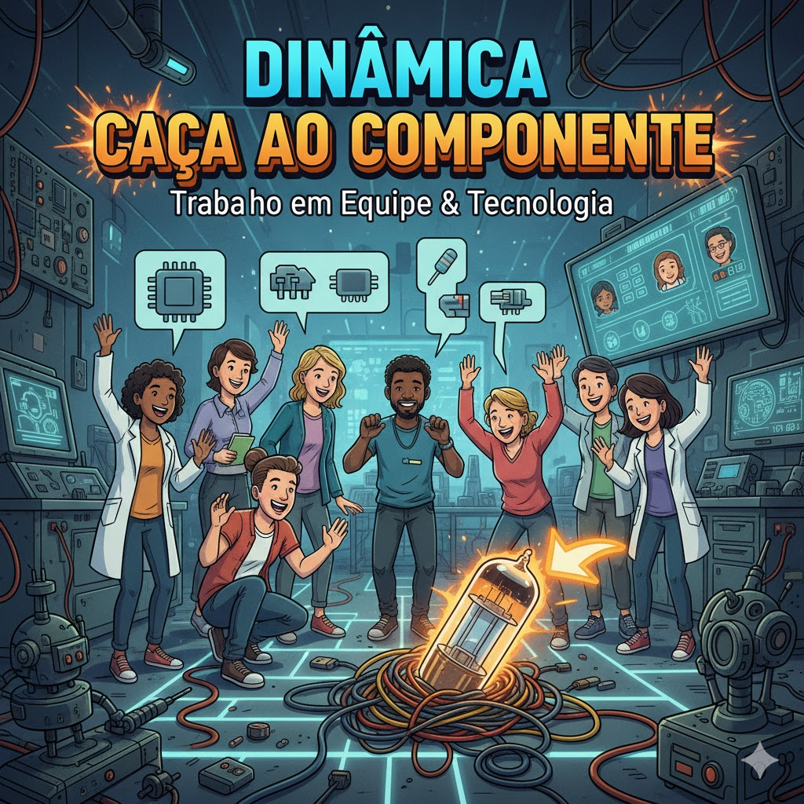

Eletricidade o que é realmente ?
A eletricidade é a forma de energia gerada pelo movimento de partículas chamadas elétrons.
Ela está presente em praticamente tudo ao nosso redor: desde o funcionamento de computadores e
lâmpadas,
até motores e circuitos eletrônicos.
Compreender como ela surge, se move e pode ser controlada é o primeiro passo para entender o
mundo da eletrônica e da manutenção de micros.

Corrente Alternada (AC - Alternating Current)
Fluxo de elétrons: O sentido do fluxo de elétrons inverte periodicamente (geralmente 60 vezes
por segundo no Brasil - 60 Hz).
Polaridade: Não possui polaridade fixa.
Onde é encontrada: Na rede elétrica que chega às residências, escritórios e indústrias
(tomadas).
Vantagem: Mais eficiente para ser transmitida por longas distâncias e a tensão é facilmente
alterada usando transformadores.
Desvantagem: Não pode ser armazenada em baterias (precisa ser convertida para DC).

Corrente Contínua (DC - Direct Current)
Fluxo de elétrons: Ocorre em apenas uma direção, mantendo um fluxo constante.
Polaridade: Possui polaridade definida (positivo e negativo).
Onde é encontrada: Principalmente em pilhas, baterias, células solares e na maioria dos
circuitos eletrônicos (após a conversão).
Vantagem: Estabilidade e ideal para eletrônicos sensíveis e armazenamento em baterias.
Desvantagem: Maior perda de energia em longas distâncias.

Entendendo a Eletricidade: Voltagem, Amperagem e Watts
A eletricidade é governada por três conceitos essenciais e interligados: a Voltagem (Volts - V),
que é a pressão ou a força que empurra os elétrons; a Amperagem (Ampères - A), que é a
quantidade ou o fluxo desses elétrons em movimento; e os( Watts - W ), que representam a Potência
real, ou seja, a velocidade com que o trabalho é realizado ou a energia é consumida. Em
essência, os Watts são o resultado da multiplicação da Voltagem pela Amperagem (W = V \
A), demonstrando que a potência de um aparelho depende tanto da força com que a energia é
empurrada quanto do volume de carga que está fluindo.

Conceitos Fundamentais da Eletrônica
Tensão (V): força que empurra os elétrons.
Corrente (I): fluxo de elétrons em um condutor.
Resistência (R): oposição à passagem da corrente.
Lei de Ohm:
Tensão (V) V = I × R
Corrente (I) I = V
Resistência (R) R = I

Capacitores
O capacitor é um componente eletrônico que funciona como um reservatório de energia temporário.
Estrutura: Consiste em duas placas condutoras separadas por um material isolante (dielétrico).
Função: Sua principal função é armazenar carga elétrica em um campo elétrico, liberando-a quando
necessário.
Aplicações: São cruciais para suavizar e filtrar a tensão em fontes de alimentação e fornecer
picos de energia (como na partida de motores).

Resistor
Componente que limita a passagem da corrente elétrica e controla a tensão. Identificado por
faixas coloridas que indicam seu valor em Ohms (Ω). Usado para proteger LEDs e ajustar
circuitos.

Diodo
Permite a passagem da corrente elétrica em apenas um sentido. É usado em fontes de alimentação
para transformar corrente alternada (AC) em corrente contínua (DC).

Transistor
Inventado em 1947, substituiu as válvulas eletrônicas. Atua como amplificador ou chave
eletrônica. Possui três terminais: Base (B), Coletor (C) e Emissor (E). É o coração dos
processadores modernos.

Dinâmica “Caça ao Componente”